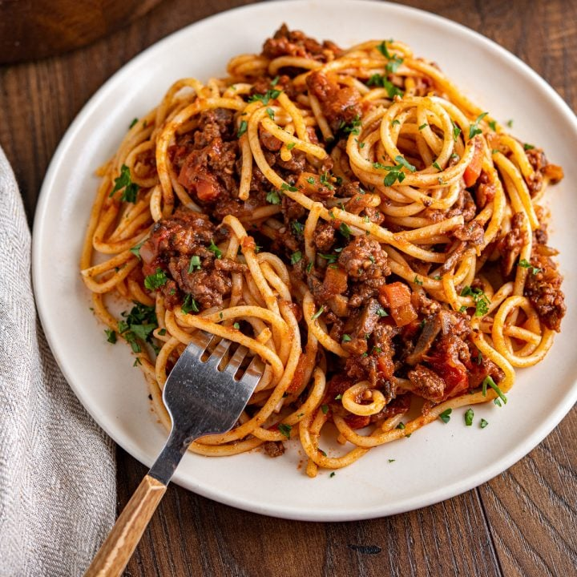

Spaghetti Bolognese

Description
Italian pasta with a sauce made of ground beef and tomatoes
Ingredients
Meat
- 1 table spoon olive oil
- 4 medium onions
- 2 carrots
- 2 garlic cloves
- 500g beef mince
- chopped bacon
- 2 rose mary leaves
Bolognese sauce
- 400g plum tomatoes
- Small pack of basil leaves finely chopped
- 1 table spoon dried oregano
- 1 beef stock cube
- 6 cherry tomatoes
- 1 red chilli
- 125 ml red wine
Season and serve
- 75g parmesan cheese
- 400g spaghetti
- crusty bread
Steps
Bolognese
- Put a large pan and add the oil
- Add the bacon and fry for 10 minutes
- Reduce the heat and add the onions, carrots, garlic, leaves, and fry until the vegetables are soft
- Increase the heat and add the ground beef for 4 - 5 minutes until the meat its all cooked
- Add the tins of plum tomatoes, basil , oregano and the cherry tomatoes. Stir with a s spoon breaking up the tomatoes
- Cover the pan with a lid and cook for 10 minutes until you have a thick sauce
- Add the parmesan cheese and stir.
- Check the seasoning, add salt and pepper if needed
Spaghetti
- Cook 400g spaghetti following the pack instructions
- Drain the spaghetti and either stir into the bolognese or use the pasta as a base and add the sauce on top
- serve with parmesan and bread